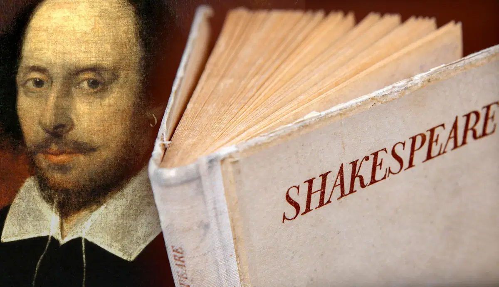
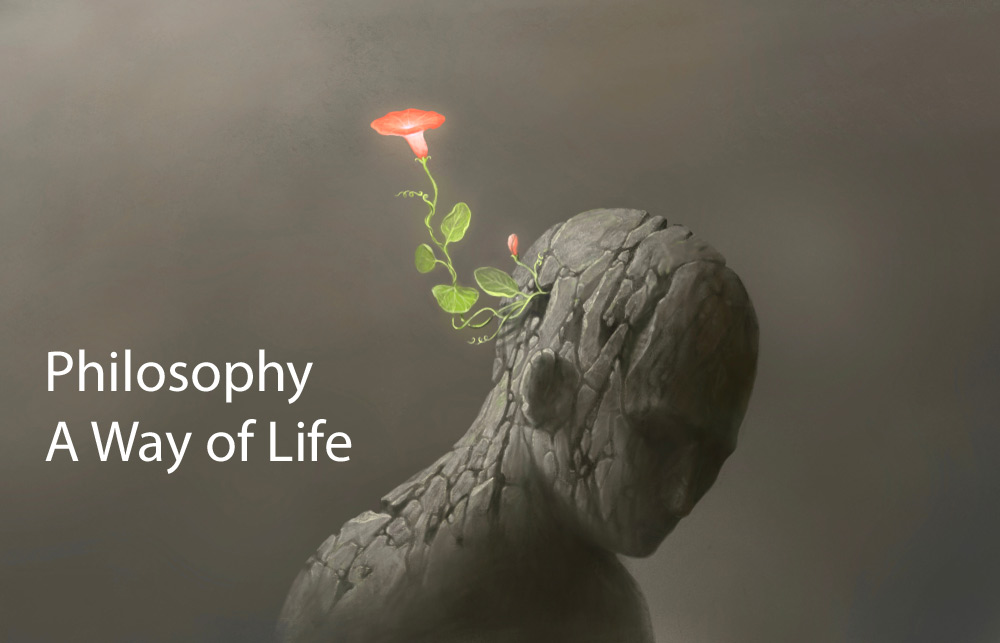
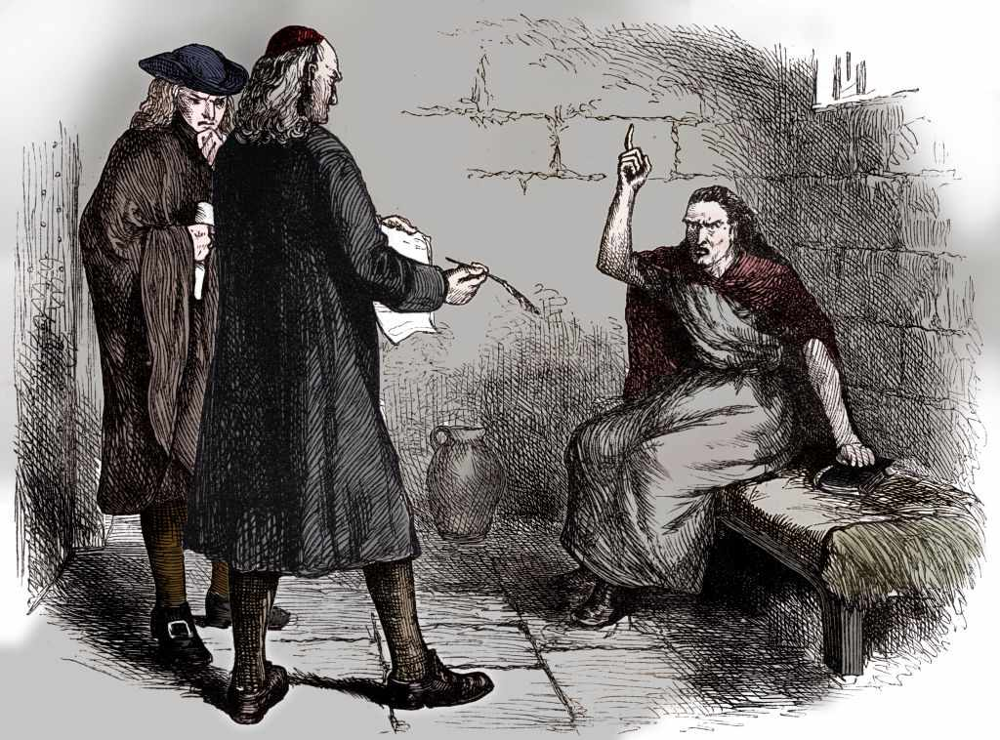

FREE
Modern Art & Ideas
Modern art refers to artistic movements from the late 19th to mid-20th century that broke traditional boundaries, emphasizing innovation and experimentation. It includes abstract, surrealism, and expressionism, focusing on subjective expression and the exploration of new mediums. Modern art challenges conventional perspectives, reflecting societal changes and evolving ideas.
FREE

Shakespeare’s Life and Work
William Shakespeare (1564-1616) was an English playwright, poet, and actor, widely regarded as one of the greatest writers in the English language. His works include iconic plays like Hamlet, Romeo and Juliet, and Macbeth, exploring themes of love, power, fate, and human nature. His influence endures globally.
FREE

Introduction to Philosophy
Philosophy is the study of fundamental questions regarding existence, knowledge, ethics, reason, and the mind. It explores concepts like reality, morality, and human nature through critical thinking and logical analysis. Major branches include metaphysics, epistemology, ethics, and logic, aiming to understand the world and our place within it.
FREE

Film, Images & Historical Interpretation
Films often serve as powerful tools for historical interpretation, blending artistic expression with factual events. Filmmakers can offer unique perspectives on historical events, influencing how audiences understand the past. However, films may also take creative liberties, shaping perceptions by emphasizing certain themes or characters. While they can provide insight into historical contexts, it's essential to critically analyze films to distinguish between entertainment and accurate historical representation.